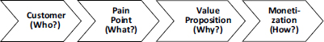

Five dimensions.
Financial intermediaries exist because of five persistent frictions. Fintech does not eliminate these frictions — it re-prices them.

The innovation landscape.
Pisano’s 2×2 maps innovation along two dimensions: the degree to which it leverages existing technical competencies and the degree to which it leverages existing business models.


Business models.
The fundamental architectural choice: serve one customer group (product model) or orchestrate two or more groups on a platform (market model). Most transformational fintechs are multi-sided.


Agency vs. principal.
How a fintech earns revenue determines its risk profile, capital requirements, and regulatory obligations. The fundamental split: fee-based (agency) vs. balance-sheet (principal).